Separate responses with a line containing only ---. Start a response with Name: Alex to label it, or import a CSV with Name and Response columns.
0 responses
Run
Starting…0%
unsaved
Columns run from lowest level (left) to highest (right). Leave a cell empty if a criterion uses fewer levels. Describe what you would see in the writing at each level: Nimble only knows what the descriptions say.
Drop a CSV file hereOr choose a file, or click here and paste (Ctrl+V / ⌘V) straight from Excel, Google Sheets or Word.
Start from a templateSame grid as the editor. The first rows are instructions and are ignored on import.
How to fill it in
Column
Required
What goes in it
Criterion
Yes
Short name shown in results, e.g. "Action plan".
Type
No (score)
score for levels, or yes/no for a check.
Weight
No (1)
How much it counts toward the overall %. 2 counts double.
Question for the model
No
The question Nimble answers. Written from the name if blank.
Label (points) × 2–10
Yes
One column per level, lowest first, e.g. Developing (1). Each cell describes that level for the criterion. For yes/no rows: what NO looks like in the first level column, what YES looks like in the last.
Rubric name, Assignment, Context rows
No
Optional rows above the header that prefill the rubric name, the assignment and the context sent with each response.
▦
No results yet
Run an evaluation, or open a past run from History.
Average by criterion
Mean position on each criterion's scale (0% = lowest level, 100% = highest).
Outcome bands
Overall weighted score mapped to the bands in Settings.
Responses
Tick the circle on a score to agree with the model, click the level name to pick a different one, or select rows to review in bulk. Click a learner for the full breakdown and audit trail. Single edits are confirmed in the cell; press Ctrl+Z (⌘Z) to step back through recent changes.
Score a sample of human-graded essays with the connected model, then compare the model with the people. How this works
1 Dataset and prompt
Every essay in a run answers the same prompt, so one rubric is compared against all of them.
ASAP, PERSUADE or ELLIPSE files straight from the source, or your own graded CSV.
2 Rubric
Each dataset's official rubric, word for word, or its Adjusted version: the same level text plus a context block and a plain question for each criterion.
Sent between the assignment and the essay, under CONTEXT FOR SCORING.
3 Sample
Stratified keeps low, middle and high human scores in proportion, and always includes the rare ones. The same seed picks the same essays every time, here and in benchmark.py.
4 Run
Benchmark runs
Saved in this browser after every essay. Closing the tab is safe: Resume picks up where it stopped.
From this tab or benchmark.py. Open several to compare models. Add the matching .audit.jsonl to include requests and replies.
◎
No results open
Run a benchmark, then click Explore on it, or open a results CSV.
Model vs human, by criterion
Click a row to focus the charts below.
Where the model landed
Rows are the human score, columns the model's. Outlined cells are agreement. Click a cell to list those essays.
Score distribution
How often each score was given, by people and by the model.
Bias by human score
Average model score minus human score, for essays at each human score. Left = model harsher.
Confidence vs accuracy
If confidence is useful, the model should agree more often when it is more confident.
Gap by essay length
Compare runs
Every open results file for this dataset and prompt, on the same filters. Use it to compare models.
Essays
Run history
Saved in this browser. Export anything you want to keep long-term.
⟲
No runs yet.
Connection
Choose which model scores your responses. Local Ollama + nimble is private and free. Cloud options send learner text to the provider. How to choose and set up a model
Scoring & review rules
Nimble returns a probability for every level. The app takes the most likely level, and flags results for human review using these rules.
One per line: 80 Exceeds expectations
Appearance & data
Quick start: your first evaluation in 5 minutes
Follow along with a real example. You'll install the model, start the app, load the sample rubric and four sample diary entries, score them, and review the results. Numbers in the pictures, like 1, match the numbers in the steps.
The scenario. You run a leadership programme. Learners wrote a 200 to 400 word reflective diary about a situation at work that did not go as planned. You want each entry scored against a five-part rubric, with feedback, and you want to check whether the model grades like you do.
No time to install anything? Go to Settings, tick Demo mode, and jump to step 4. Demo mode makes up plausible scores so you can learn the screens. Turn it off before real use.
1 Install Ollama and the nimble model about 2 minutes plus download
Download Ollama from ollama.com/download (Mac, Windows or Linux) and install it. You need version 0.35 or newer.
Open a terminal (Mac: Terminal; Windows: PowerShell) and run:
ollama pull nimble
This downloads about 9.5 GB once. A computer with 32 GB of memory (Apple Silicon) or a 16 to 24 GB graphics card is comfortable. On a smaller machine try ollama pull tev1 (4B) instead.
Ollama runs in the background after install. If it isn't running, start it with ollama serve.
2 Start the app 30 seconds
Unzip the app folder somewhere easy, such as your Desktop.
In a terminal, go into the folder and start the small local server:
cd ~/Desktop/nimble-rubric-evaluator
python3 serve.py
Your browser opens http://localhost:8787. Keep the terminal window open while you use the app; press Ctrl+C to stop it.
Windows: if python3 isn't found, use py serve.py. Python comes from python.org or the Microsoft Store.
3 Check the connection 15 seconds
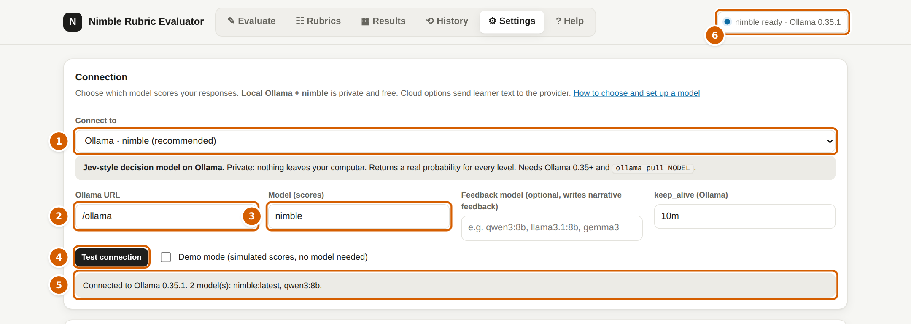
Settings → Connection
1Connect to: leave it on Ollama · nimble (recommended).
2Ollama URL: leave it as /ollama. That means "go through serve.py to Ollama on this computer".
3Model: nimble.
4 Click Test connection.
5 You should see "Connected" and nimble in the model list. If it says "not installed", run ollama pull nimble.
6 The status badge at the top right shows the connection on every page. Click it any time to re-check.
4 Look at the sample rubric 1 minute
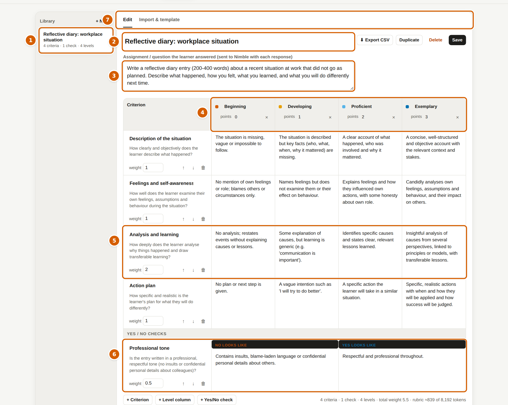
Rubrics → Edit
1Library: your saved rubrics. Click Reflective diary: workplace situation, the built-in sample.
2Rubric name and 3Assignment: the question the learner answered. It's sent with every response so the model knows the task.
Context for the model (optional): also sent with every response. Say who the learners are and which standard to judge against, for example "first-year team leaders; judge against what is expected at that stage, not expert writing". Without it, models tend to judge against polished expert writing and score too low.
4Level columns run from lowest (left) to highest (right): Beginning, Developing, Proficient, Exemplary. Each has a name and points (here 0 to 3).
5 Each row is a criterion, such as "Analysis and learning". Each cell says what that level looks like in the writing.
6Yes/no checks sit underneath, such as "Professional tone".
7Import & template is where you bring in your own rubric from Excel (see Rubrics).
You don't need to change anything for the quick start.
5 Paste responses and run 1 minute
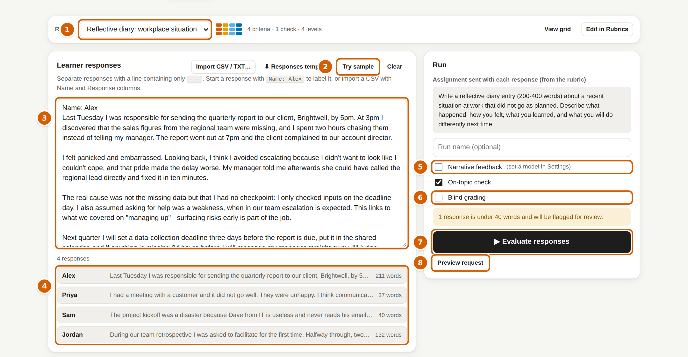
Evaluate
1Rubric: pick the sample rubric.
2 Click Try sample. Four diary entries (Alex, Priya, Sam and Jordan) appear.
3 This is the responses box. For your own work, paste responses here, separated by a line with only ---, each starting with Name: ….
4 The app shows how it split the text, with word counts. Check there are four.
5Options: Narrative feedback (needs a second, writing model), On-topic check (recommended) and 6Blind grading (hides the model's scores until you've graded; see Blind grading). Leave blind grading off for now.
7 Click Evaluate responses. Each response takes about a second on a fast computer.
8Preview request shows exactly what will be sent to the model, if you're curious.
6 Read the results 1 minute
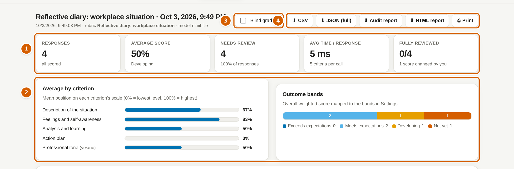
Results: summary
1Summary cards: number of responses, average score, how many need review, speed, and how many you've reviewed.
2Charts: average per criterion, and how many learners fell in each outcome band.
3Blind grading switch for this run.
4Downloads: CSV for Excel, full JSON, audit report, HTML report and print.
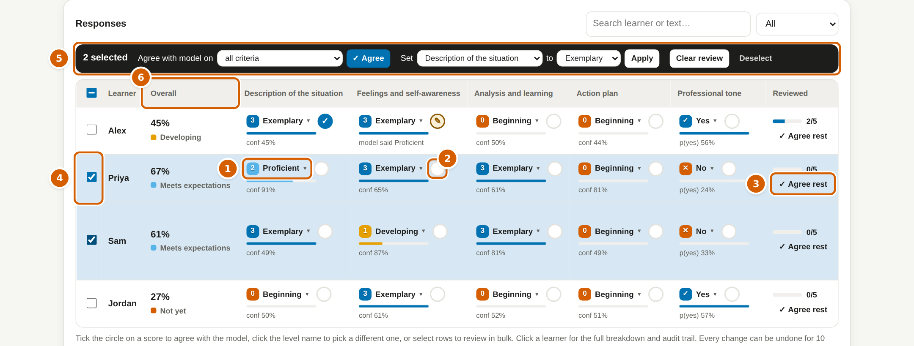
Results: the responses table
1 Each cell is the model's level for that criterion. Click the level name to pick a different level if you disagree.
2 Click the circle to agree with the model. It turns into a tick ✓, or a pencil ✎ if you changed the level.
3Agree rest accepts every score on that row you haven't touched.
4 Tick rows on the left to work on several at once. 5 The bulk bar appears: agree, set a criterion to a level, or clear.
6 Click any column heading to sort. Click a learner's name for the full breakdown.
That's it: you've run your first evaluation. Single grading edits are confirmed right in the cell. Bigger actions (deletes, imports, bulk changes) show one small message in the bottom-left corner with Undo for 10 seconds. Ctrl+Z / ⌘Z steps back through your recent actions at any time.
The app turns your rubric into questions and asks a model to answer them about each learner's response. Then it turns the answers into scores, feedback and reports.
Your rubriccriteria × levels
→
Questionsone per criterion
→
Modelpicks a level with a probability
→
Scoresweights, bands, flags
→
You reviewagree or change
One request per response. All criteria for one learner go to the model together, along with the assignment text.
Probabilities, not just answers. Decision models like nimble say how likely each level is (for example Proficient 72%, Developing 21%). The app picks the most likely level and uses the spread to judge confidence.
Scoring. Each level has points. The app converts the chosen level to a 0 to 100% position on that criterion's scale, applies the criterion weights, and averages them into an overall %. The overall % maps to an outcome band (set in Settings).
Review flags. A result is flagged when the model was unsure (low confidence, or two levels nearly tied), the response is very short, or the on-topic check fails. Flagged results are the ones a person should look at.
Feedback. Decision models can't write text, so feedback is built from your level descriptions ("You're at Developing. To reach Proficient: …"). Optionally a second, writing model turns that into a friendlier paragraph; it is told the scores are final.
Your grades win. When you change a level, the overall score, band and feedback update straight away, and the change is recorded.
Connecting a model
Choose under Settings → Connection → Connect to. There are three families. Pick based on privacy, cost and accuracy.
Option
What it is
Privacy
Cost
Probabilities
Best for
Ollama + nimble (recommended)
Jev-style decision model running on your computer
✓ Nothing leaves your machine
Free
✓ Real, per level
Learner data, high volumes
Ollama + tev1 / tev1:0.8b
Smaller experimental decision models
✓ Local
Free
✓ Real
Laptops without much memory
TypeSafe Jev (cloud)
The original Jev decision API
! Text sent to TypeSafe
Paid API
✓ Real
No suitable hardware, same behaviour as nimble
Cloud LLM as judge OpenAI, Anthropic, Google Gemini, OpenRouter, Groq, Mistral, any OpenAI-compatible API
A general chat model reads the rubric and answers in JSON
! Text sent to the provider
Paid per token
! Model's own estimate
Comparing models, complex judgements
Local LLM as judge an Ollama chat model such as qwen3:8b, or LM Studio
A general chat model on your computer
✓ Local
Free
! Model's own estimate
Trying a second opinion privately
Learner data. Cloud options send each learner's response to that company. Check your organisation's data policy and the provider's terms before using real learner text. The local Ollama options keep everything on your computer.
Option A: Ollama with nimble (local, recommended)
Install Ollama 0.35+ from ollama.com/download.
Download a decision model:
ollama pull nimble # 9B, best accuracy, about 9.5 GB
ollama pull tev1 # 4B, lighter (experimental)
ollama pull tev1:0.8b # tiny, for quick tests (experimental)
Start the app with python3 serve.py and keep Ollama URL as /ollama.
Test it yourself from a terminal (optional):
curl http://localhost:11434/v1/systemone -d '{"model":"nimble","state":"The sky is blue.","questions":{"q":{"type":"noul","instructions":"Does the text mention a colour?"}}}'
Hardware. nimble needs about 18 GB of memory while running. Apple Silicon with 32 GB+, or an NVIDIA card with 16 to 24 GB, is comfortable. Add about 6 GB if you also run a writing model for feedback.
Ollama on another computer (for example a shared GPU server): choose Ollama on another computer and type its address, such as http://192.168.1.20:11434. On that server, start Ollama with OLLAMA_HOST=0.0.0.0 OLLAMA_ORIGINS=* ollama serve. Or, simpler, run the app with OLLAMA_HOST=http://192.168.1.20:11434 python3 serve.py and keep the URL as /ollama.
Option B: TypeSafe Jev (cloud decision API)
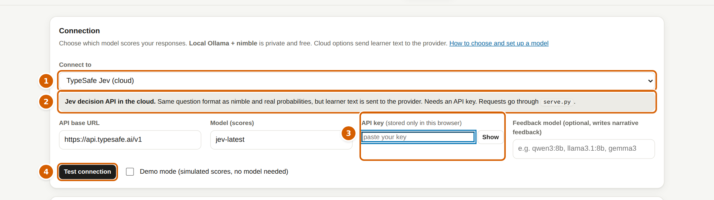
Settings → Connection with a cloud option chosen
1 Choose TypeSafe Jev (cloud). The URL fills in as https://api.typesafe.ai/v1 and the model as jev-latest.
2 The blue box explains what this option does with your data.
3 Paste your API key from your TypeSafe account. It's stored only in this browser, never in exports or audit files.
4 Click Test connection. The app sends one tiny test question.
Jev uses the same question format as nimble, so results, probabilities and reports work the same. Other Jev-compatible endpoint is for any other server that speaks the same API (the app calls {URL}/systemone).
Option C: a general LLM as the judge
Choose the provider: OpenAI, Anthropic (Claude), Google Gemini, OpenRouter, Groq, Mistral or Other OpenAI-compatible API (Azure OpenAI, Together, DeepSeek, a company gateway…).
Paste your API key from that provider's website.
Click Test connection. The app lists the models your key can use. Click in the Model box and pick one (start typing to filter).
Run as normal. Narrative feedback uses the same provider; leave Feedback model empty to use the scoring model.
How it works. The app sends the rubric questions as a prompt and asks for JSON with a level and a probability for each level. It converts the reply into the same format nimble uses, so every screen and report works. The difference: these probabilities are the model's own guess, so confidence-based flags are rougher. The raw prompt and the model's exact reply are kept in the audit trail.
Local LLM judges.Ollama chat model uses any chat model you've pulled (for example ollama pull qwen3:8b) through Ollama's OpenAI-compatible endpoint. LM Studio uses http://localhost:1234/v1; in LM Studio start the server and switch on CORS.
Why cloud options need serve.py
Browsers block web pages from calling most AI APIs directly. serve.py forwards the request for you, but only to a fixed list of known AI providers (TypeSafe, OpenAI, Anthropic, Google, OpenRouter, Groq, Together, Mistral, DeepSeek and Azure OpenAI). To allow another HTTPS host, start it with EXTRA_HOSTS=api.example.com python3 serve.py.
Other Jev-style models
nimble (Bespoke Labs, open source, 9B) and tev1 (Together AI, 4B and 0.8B, experimental) run in Ollama and work directly.
Jev (TypeSafe) is cloud only, through its API.
Laya (Convai, small BERT-style models) runs as a Python library rather than an HTTP service, so it can't be connected here.
Rubrics
A rubric is a grid: criteria down the side, levels across the top, and a description in every cell. The same grid layout is used in the editor, the CSV template and the reports.
Editing
+ New starts an empty rubric. Click any cell to type.
+ Level column adds a level (2 to 10). Levels are shared by all criteria. Type the level name and its points in the column heading; × removes a column.
+ Criterion adds a scored row. Set its weight (2 counts double) and the question for the model, such as "How well does the learner analyse why things happened?".
+ Yes/No check adds a pass/fail row, such as "Mentions a specific date for the action". Describe what NO and YES look like.
Save stores it in the library. Duplicate, Delete and Export CSV do what they say. Everything can be undone for 10 seconds.
Importing from Excel or Google Sheets
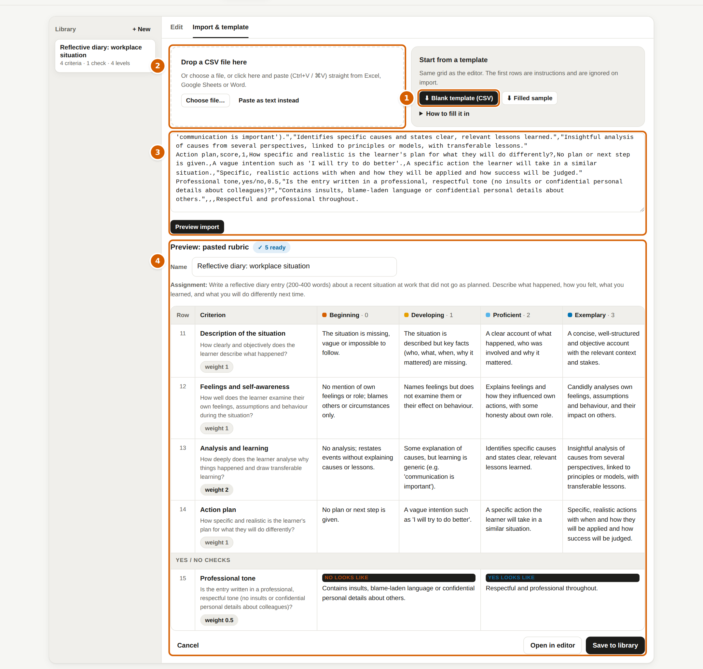
Rubrics → Import & template
1 Download the blank template or the filled sample and open it in Excel.
2 Fill it in (one row per criterion, one column per level, lowest first), then drop the saved CSV here or click Choose file.
3 Or copy the cells in Excel and paste them straight into the page.
4 The preview marks each row ready, warning or error before anything is saved. Click Open in editor to check it, or Save to library.
Column
Required
What goes in it
Criterion
Yes
Short name, such as "Action plan"
Type
No (score)
score or yes/no
Weight
No (1)
How much it counts. 2 counts double.
Question for the model
No
What the model should judge. Written from the name if blank.
Label (points), 2 to 10 columns
Yes
One column per level, lowest first, such as Developing (2). For yes/no rows: NO in the first level column, YES in the last.
Rows starting with # are instructions and are ignored. Optional Rubric name, Assignment and Context rows above the header fill those fields in. If your columns run highest first, the app notices and flips them.
Evaluate
Rubric: choose one from the library. View grid shows it without leaving the page.
Responses: paste text, separated by a line containing only ---. Start each with Name: Alex to label it. Or Import CSV / TXT with Name and Response columns (download the Responses template for the layout).
Run name: optional label for History.
Narrative feedback: a writing model turns the rubric feedback into a short coaching paragraph. Needs a feedback model in Settings (for example ollama pull qwen3:8b), or uses the judge model for cloud LLMs.
On-topic check: an extra yes/no question that catches empty, copied or off-topic answers. Recommended.
Blind grading: hide the model's scores on the Results tab until you reveal them.
Before running, the app checks the rubric and the size of each request (nimble reads up to about 8,000 tokens, roughly 6,000 words including the rubric) and warns about very short responses.
Cancel stops a run; anything already scored is kept.
Results and reviewing
The Results tab shows the open run. Reviewing means telling the app whether you agree with each score. It's optional, but it's how you build trust in the model and correct mistakes before learners see results.
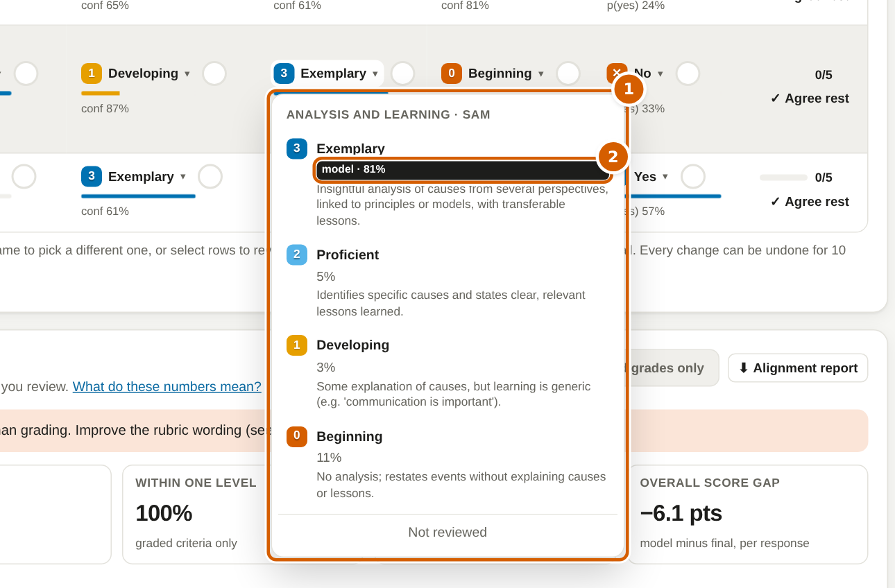
Click a level name to choose a different level
1 The level picker lists every level, highest first, with what it means and how likely the model thought it was.
2 The model's choice is tagged model. Pick it to agree, pick another to change the grade, or Not reviewed to clear.
Three ways to review
One score: click the circle to agree, or the level name to change it.
One response:Agree rest on the row, or open the learner and use the level buttons.
Many responses: tick rows (or the box in the header for all shown), then use the bulk bar: Agree with model on all or one criterion, Set a criterion to a level, or Clear review.
The detail view
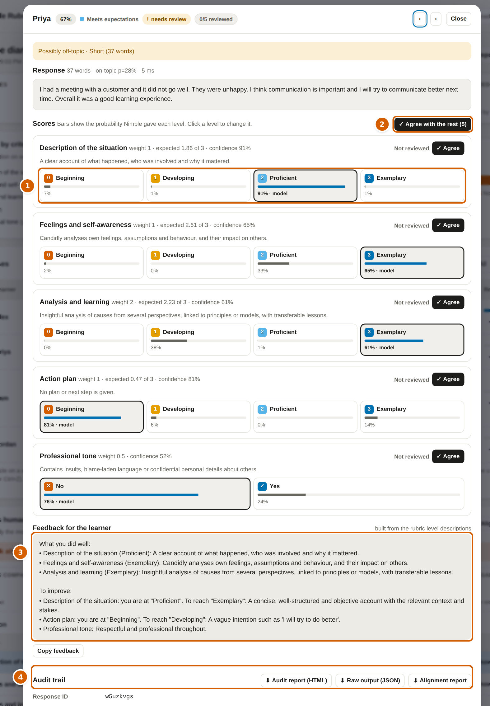
Click a learner's name
1 One button per level. The bar under each shows the model's probability; the outlined button is the current grade. Click a level to grade.
2Agree with the rest accepts every score you haven't reviewed.
3Feedback for the learner, ready to copy.
4Audit trail: the exact request and the model's raw reply, plus downloads. Use ‹ › or the arrow keys to move between learners.
What the symbols mean
Not reviewed yet
✓
You agreed with the model
✎
You changed the model's level ("model said …" appears underneath)
needs review
Flagged: the model was unsure, the response is short, or it may be off-topic
Level colours, lowest to highest (colour-blind safe). Numbers and icons always appear too.
Blind grading
If you can see the model's score before you grade, it's hard not to be influenced by it. Blind grading hides the model's results so your grades are independent. That makes the comparison with the model fair.
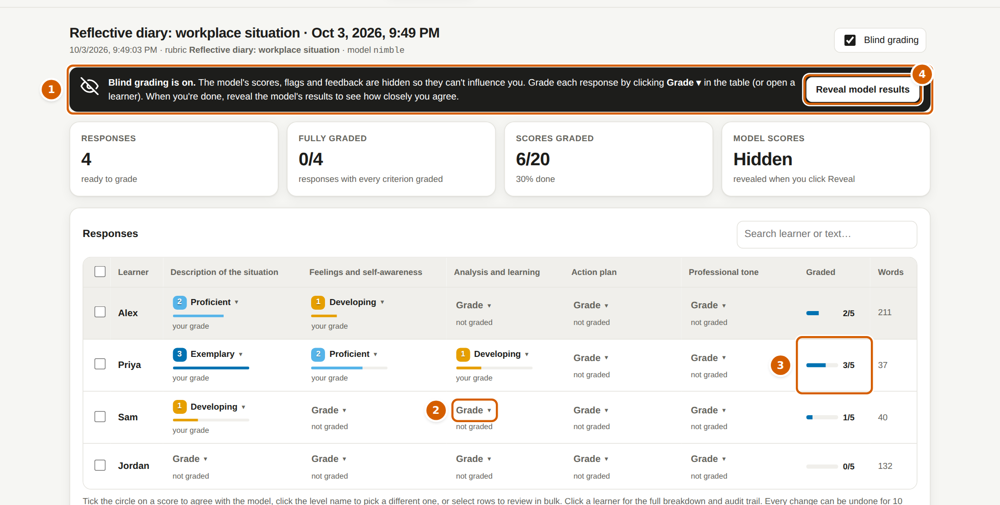
Results with blind grading on
1 The dark banner tells you blind grading is on. Scores, flags, charts, feedback, downloads and the audit trail are hidden.
2 Click Grade ▾ in any cell and pick a level. You can also open a learner and click the level buttons, or tick rows and use Set … to … in the bulk bar.
3 The Graded column shows your progress for each learner.
4 When you've finished, click Reveal model results. The app jumps to the alignment report.
Turn it on before a run (Evaluate → Blind grading) or for an open run (the Blind grading switch at the top of Results).
Each grade remembers whether it was given blind, so the alignment report can show Blind grades only.
History shows "hidden" instead of averages for blind runs, so nothing leaks there either.
Revealing can be undone for 10 seconds if you clicked by mistake.
Model vs human alignment
This report answers one question: how closely does the model grade like a person? It appears under the responses table as soon as you've reviewed some scores, and updates as you go.
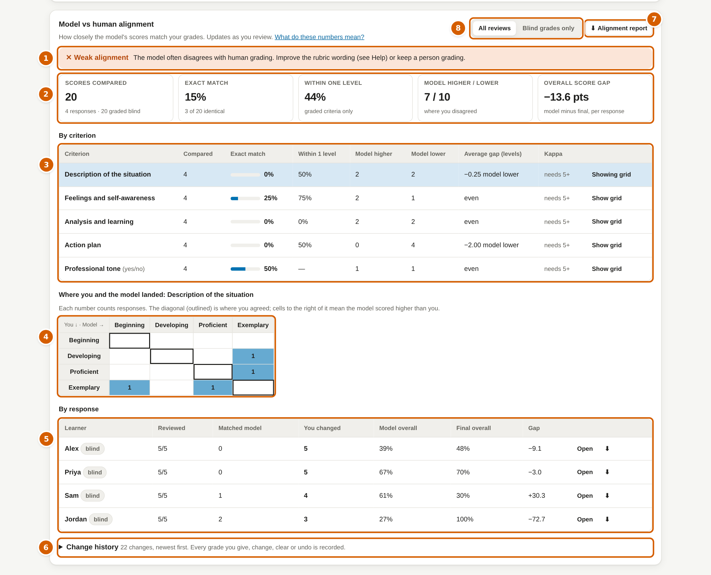
Results → Model vs human alignment
1Verdict in plain words: strong, moderate or weak alignment, and what that means for using the model.
2Headline numbers: scores compared, exact match, within one level, how often the model was higher or lower than you, and the average gap in overall score.
3By criterion: where the model is reliable and where it isn't. Click Show grid on a row.
4The grid: your level down the side, the model's across the top. Numbers on the outlined diagonal are agreements. Numbers to the right mean the model scored higher than you; to the left, lower.
5By response: how many scores you changed for each learner, and the model's overall score next to the final one. ⬇ downloads a report for that one learner.
6Change history: every grade you gave, changed, cleared or undid, with the time, what the model said, and whether it was blind.
7Alignment report downloads the whole thing as a web page you can share or print.
8 Switch between All reviews and Blind grades only.
Reading the numbers
Measure
Meaning
Good sign
Exact match
Share of scores where you chose the same level as the model
70%+ on 4-level scales; 85%+ on yes/no checks
Within one level
Counts "one level apart" as agreement (graded criteria only)
90%+
Model higher / lower
When you disagreed, which way the model leaned
Roughly balanced. Mostly "lower" means the model is harsher than you.
Average gap
Average difference in levels (or overall %), model minus you
Close to 0
Kappa
Agreement beyond what chance would give (quadratic weighted kappa). 1 = perfect, 0 = chance.
Above 0.6 is usually considered good. Needs at least 5 scores.
Verdict rules. Strong: exact match 80%+ and within-one 95%+. Moderate: exact match 60%+ and within-one 85%+. Otherwise weak. Use at least 30 graded responses per criterion before deciding.
Where the record is kept. The change history is saved with the run, included in the JSON export and the audit report, and each response's audit trail shows a "Human review vs model" table. The CSV export adds the model's overall score plus, for every criterion, your level, "match" or "changed (+1)", and whether you graded blind.
Benchmark against human graders
The Benchmark tab answers a different question from the rest of the app: before you trust the model with your learners, how well does it grade essays that experienced people have already graded? It sends a sample of publicly available, human-graded essays to the model with the dataset's own rubric, stores the model's scores next to the human scores, and gives you an explorer to compare them overall, by criterion, by group and essay by essay.
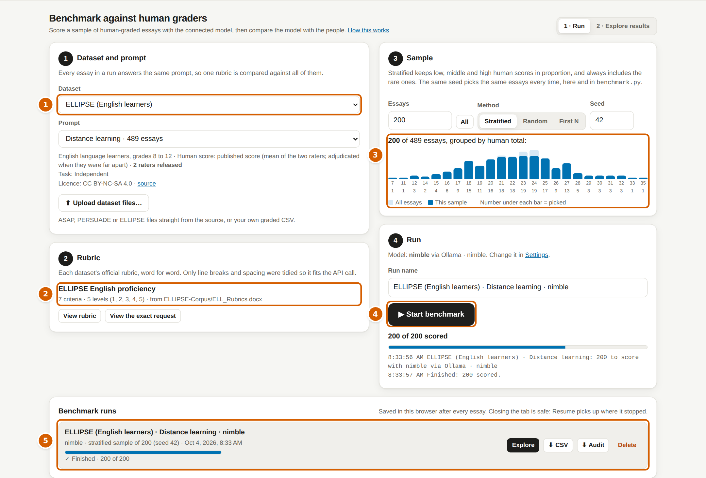
Benchmark → 1 · Run
1Dataset and prompt. Pick a dataset, then one writing prompt. Every essay in a run answers that prompt, so a single rubric is compared against all of them.
2Rubric. The dataset's official rubric, filled in for you. View rubric shows every level; View the exact request shows exactly what the model will receive for the first essay.
3Sample. How many essays, and how to pick them. Stratified (the default) keeps low, middle and high human scores in proportion and always includes the rare ones. The bars show the whole prompt (light) and your sample (dark).
4Run. Uses the model connected in Settings. Progress is saved after every essay; Pause and Resume whenever you like, even after closing the browser.
5Benchmark runs. Each run can be resumed, explored, downloaded as a results CSV, or downloaded as an audit file with every request and raw reply.
The datasets
Dataset
What's in it
Human scores
Rubric
ASAP-AES set 7
1,569 grade 7 stories about patience
Two raters, four traits each, 0 to 3. The "human" score is their average.
Each rubric was built straight from the dataset's official rubric file, and every level description was checked by a script to be an exact copy of the source. Only spacing and line breaks were tidied, plus two words the ELLIPSE file had split in half ("capitalizatio n", "inappropri ately"). The check is recorded in datasets/rubrics/VERIFY.md; the rubrics are also saved as CSV files you can import in the Rubrics tab.
The API needs a few words around the rubric. This is everything the benchmark adds, and nothing else:
Each criterion's question is Criterion "<name>". Which level of this rubric criterion does the essay meet? (for PERSUADE holistic, the rubric's own instruction paragraph is used instead of the second sentence).
Each level is sent as <label>: <description>, e.g. 3: Tells a story with ideas that are clearly focused…, which is how the source rubrics are laid out.
The essay is sent under the headings ASSIGNMENT GIVEN TO THE WRITER (the prompt's own wording from the dataset), SOURCE TEXT GIVEN TO THE WRITER (source-based PERSUADE prompts only) and ESSAY.
With an LLM judge, a short system message asks for an honest, literal reading of each level and a JSON reply.
Adjusted rubrics
Every dataset rubric also has an Adjusted version (pick it under Rubric version). The level descriptions are the same, word for word. Two things are added: a context block sent with every essay under CONTEXT FOR SCORING (who the writers are, which standard to judge against, and notes such as ASAP's anonymisation tokens), and a plain question for each criterion instead of the generic one. They exist because nimble ranked essays about as well as a second rater but scored them too low when it wasn't told who the writers were. Run the same prompt and seed with both versions to see the difference. You can also edit the context box for one run; the run name then says "own context". What changed is listed in datasets/rubrics/ADJUSTED.md.
Getting the data
The app ships with the data already prepared in datasets/bench/. To download it yourself, or refresh it:
Then run python3 benchmark.py prepare and reload the app. You can also skip that step and use Upload dataset files…: the app recognises the original ASAP, PERSUADE and ELLIPSE files by their columns. For ELLIPSE, upload the main CSV and the raw rater scores file together to get both raters.
Your own graded work
Upload any CSV of graded writing and the app asks which column holds the text and which columns hold the human scores for each criterion. Choose My rubric in the Rubrics tab to benchmark your own rubric against your own past grading. If two people graded each piece, map both: you get a real human-vs-human ceiling.
Reading the explorer
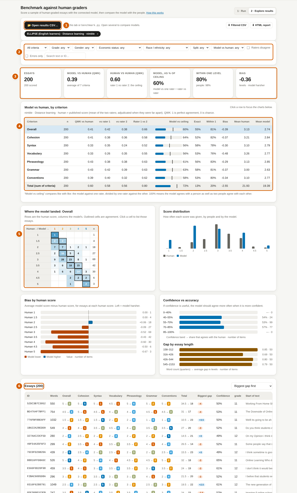
Benchmark → 2 · Explore results (simulated scores, for illustration)
1Open results. Click Explore on a run, or open one or more results CSVs (from the tab or from benchmark.py). Each open file gets a chip; files for the same prompt are compared side by side.
2Filters. Criterion, prompt, every group the dataset records (grade, gender, ELL status, economic status and so on), the human score, where the model disagreed, essays where the two raters disagreed, and text search. Everything on the page follows the filters.
3Headline numbers. Agreement averaged over the criteria.
4By criterion. Click a row to point the charts below at that criterion.
5Charts. The grid of human vs model scores (click a cell to list those essays), score distributions, bias at each human score, confidence vs accuracy, and gap by essay length.
6Essays. Sorted by the biggest gap first. Click a row to read the essay with the rubric level each side chose, the model's probabilities, and the exact request and raw reply. Use ← and → to step through.
Measure
Meaning
QWK vs human
Quadratic weighted kappa between the model and the human score: agreement beyond chance, where bigger misses cost more. 1 is perfect, 0 is chance. The standard measure for essay scoring.
Rater 1 vs 2
The same measure between the two people. This is the realistic ceiling: people don't fully agree either.
Model vs ceiling
The model against one rater, divided by one rater against the other. 100% means the model agrees with a person as well as two people agree with each other. Shown only when the raters agree enough (QWK above 0.2) for the ratio to mean something.
Exact / within 1
Share of identical scores, and of scores no more than one level apart. When the human score is an average such as 2.5, matching either rater counts as exact.
Bias
Average model score minus human score, in levels. Negative means the model is harsher.
Downloads.Full report (also on each run in the Run view) saves one HTML file with everything: the headline numbers, the criterion table, every chart for every criterion, the rubric, the assignment, and every essay with rater 1, rater 2, human and model scores, the gap, the model's probabilities, the rubric level each side chose, the full text, the exact request and the raw reply. The complete results CSV and audit file are inside it too, with buttons to save them. It follows the filters you have set. For results from benchmark.py, open the CSV and its .audit.jsonl together so the requests and replies are included. Filtered CSV saves the rows you're looking at. HTML report saves the headline numbers, the criterion table, the grid and the filtered essays as a page you can share.
Long runs from the terminal
python3 benchmark.py list
python3 benchmark.py run --dataset ellipse --prompt "Distance learning" --sample 200 -o ellipse-dl-nimble.csv
python3 benchmark.py run --dataset asap7 --sample all --model tev1
python3 benchmark.py run --dataset persuade --prompt "Car-free cities" --provider openai --url https://api.openai.com/v1 --model gpt-4.1-mini
The script uses the same rubrics, request, sampling and results columns as the tab, so the same seed picks the same essays in both, and its CSV opens in the explorer. If you stop it, run the same command again and it carries on. Keys come from --key or the JEV_API_KEY, OPENAI_API_KEY or ANTHROPIC_API_KEY environment variables, and are never written to the results.
Before you rely on the numbers
These are school students, not adult learners. A benchmark shows how faithfully the model applies a rubric. Your own graded learner work (above) is the real test for your programme.
Use enough essays. Agreement figures from fewer than about 100 essays per criterion move around a lot. The stratified sample of 200 is a good start; run more for a decision.
Expect some harshness. Research on decision models such as nimble found they tend to score below people on graded scales. The bias chart shows how much.
Licences. PERSUADE and ELLIPSE are CC BY-NC-SA 4.0: fine for internal benchmarking with attribution, not for commercial use or redistribution. ASAP came from a Kaggle competition for research use.
History, exports and the audit trail
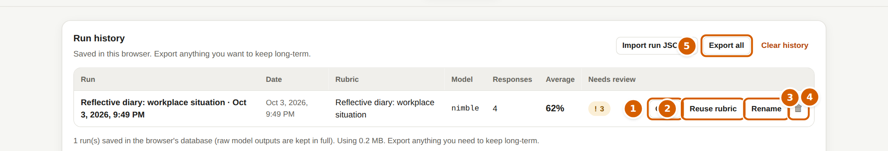
History
1Open a past run in Results.
2Reuse rubric loads that run's exact rubric into the editor.
3Rename in place (Enter to save, Esc to cancel).
4Delete (undo for 10 seconds).
5Export all as a backup file; Import brings runs back, on this or another computer.
Runs are stored in this browser's database on this computer. Clearing browser data deletes them, so export anything you need to keep.
Download
Use it for
CSV
Excel or your LMS: one row per learner, levels per criterion, human grades, feedback, plus raw request and response columns
JSON (full)
Everything, including raw model replies and the change history. Best for archiving.
Audit report
For every response: request, raw reply with SHA-256 fingerprint, parsed probabilities, scoring arithmetic, human review and change history
HTML report
A readable summary with individual feedback, for sharing
Alignment report
Model vs human agreement for the whole run or one learner
The audit trail lets anyone check how a score was produced: when it was sent, which model and version answered, the exact text sent, the model's reply word for word, how the probabilities became a level and a score, which flags were raised, and every human change. API keys are never stored in it.
Settings
Connection: see Connecting a model. keep_alive keeps the Ollama model loaded between runs (for example 10m).
Demo mode: simulated scores, for training and trying the screens without a model.
Flag if confidence below (default 0.5) and Flag if top two levels are within (default 0.15): raise these to send more results to a person; lower them to send fewer.
Flag if response shorter than (default 40 words).
Requests in parallel: 1 for a single computer; 2 to 4 for cloud providers or a big GPU server. Lower it if you see "rate limited".
Outcome bands: one per line, highest first, such as 80 Exceeds expectations. Changing them updates open results.
Appearance: light, dark or follow your computer.
Writing rubrics that score well
The model only knows what your words say. Research on Jev-style models found they match people well on yes/no checks but less well on graded scales, and that automated judges tend to score lower than people. These habits close the gap:
Describe what you'd see, not how good it is. "Names a specific cause and states a lesson" beats "Good analysis".
One idea per criterion. Split "clear and well-structured" into two rows.
Use 3 or 4 levels, clearly different from each other.
Turn fuzzy judgements into yes/no checks where you can: "Includes a specific action with a timeframe".
Write your graders' unwritten rules into the text. If a first attempt usually counts as Developing, say so.
Ask a real question in "Question for the model": "How well does the learner explain why the situation happened?"
Check with blind grading. Grade 30+ responses blind, read the alignment report, rewrite the weakest criterion, and run again.
Troubleshooting
"Ollama offline" or "Could not reach Ollama"
Start Ollama (ollama serve, or open the Ollama app). Make sure you opened the app through python3 serve.py, not by double-clicking index.html.
"nimble not installed" or "model not found"
Run ollama pull nimble. Check the Model box matches the name exactly.
"This Ollama has no /v1/systemone endpoint"
Update Ollama to 0.35 or newer from ollama.com/download.
"Check the API key" (401 or 403)
Paste the key again in Settings. Keys are saved per provider address.
"serve.py only forwards to known HTTPS AI providers"
The address isn't on the allowed list. Restart with EXTRA_HOSTS=your.host python3 serve.py.
"Rate limited" (429)
Set Requests in parallel to 1 and try again.
"The model did not reply with valid JSON"
Happens with small chat models used as judges. Try a larger model, or use nimble.
The request is too long
nimble reads about 8,000 tokens. Shorten level descriptions or split long responses into sections.
Scores look too harsh
Common with automated judges. Add your graders' expectations to the level descriptions, and check the "model lower" count in the alignment report.
Everything is slow
The first request loads the model into memory (up to a minute). After that, nimble takes about a second per response. Set keep_alive to keep it loaded.
I deleted something by mistake
Click Undo in the bottom-left message within 10 seconds, or press Ctrl+Z / ⌘Z (repeat it to step further back).
Glossary
Criterion
One thing you assess, such as "Action plan". A row in the rubric.
Level
A step on the scale, such as Proficient. A column in the rubric. Each has points.
Weight
How much a criterion counts toward the overall score.
Yes/no check
A pass or fail criterion.
Decision model
A model that picks answers with probabilities instead of writing text. nimble, tev1 and Jev are decision models.
Jev / Jev-style
TypeSafe's "System One" decision API, and models that follow the same question format (nimble, tev1).
LLM judge
A general chat model asked to grade, returning JSON.
Probability
How likely the model thinks each level is. They add up to 100%.
Confidence
How concentrated the probabilities are on one level. Not the same as being right.
Flag
A reason a person should look at the result.
Band
An outcome label for an overall score range, such as Meets expectations.
Review
Your decision on a score: agree, or change the level.
Blind grading
Grading without seeing the model's scores.
Alignment
How closely the model's grades match yours.
Kappa
An agreement statistic that discounts lucky agreement. 1 is perfect, 0 is chance.
Audit trail
The full record of how a score was produced and changed.